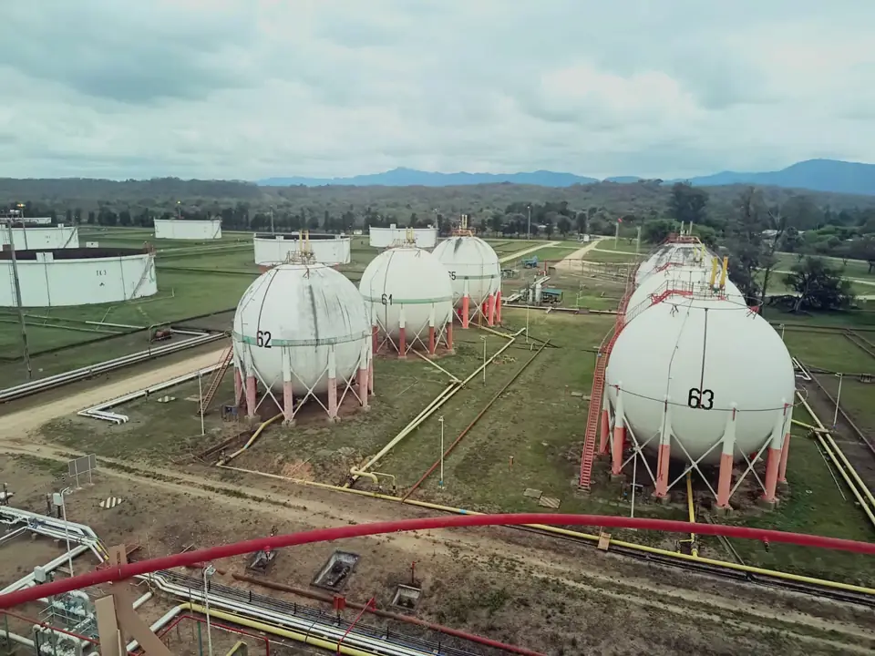
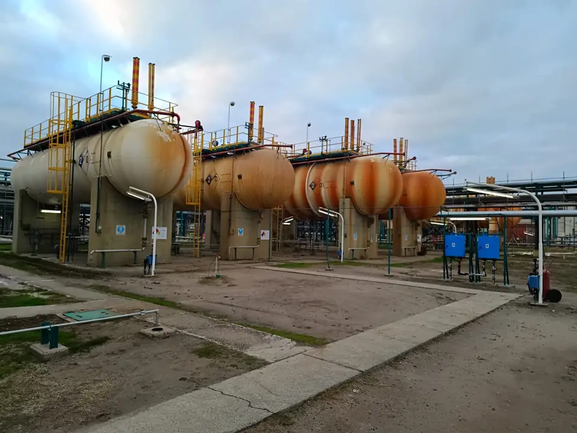

Rehabilitación de equipos almacenadores de GLP
Proceso completo de rehabilitación decenal de esferas, tanques y otros equipos de la industria del gas licuado de petróleo, con certificación final ante la Secretaría de Energía.
- Inspección visual externa e interna
- Ensayos no destructivos: US, PM, LP, EA y PAUT
- Prueba Hidráulica + Emisión Acústica
- Informe y certificación final
¿Cómo rehabilitamos un equipo de GLP?
Ensayos, inspecciones y pruebas requeridas, hasta la certificación final.
Relevamiento y planificación
Evaluación de antecedentes del recipiente y definición de un cronograma de tareas y plan de trabajo en conjunto con el operador.
Ensayos no destructivos
Se realizan los ensayos requeridos según las condiciones del recipiente, con sus respectivos informes y resultados.
Prueba Hidráulica + Emisión Acústica
Verificación de estanqueidad del equipo durante la presurización, monitoreando la presencia de posibles discontinuidades.
Certificación final
Confección del legajo técnico, emisión del certificado decenal del equipo y presentación ante la Secretaría de Energía.
¿Qué equipos rehabilitamos?
Trabajamos sobre distintos equipos y recipientes de toda la industria del Gas Licuado de Petróleo.

Esferas
Recipientes esféricos de almacenamiento en plantas industriales.

Tanques y cilindros
Recipientes cilíndricos de almacenamiento en plantas industriales.

Otros equipos
Pequeños recipientes de almacenamiento de GLP.
Lo que suelen consultarnos
¿Cada cuánto hay que rehabilitar un equipo de GLP?
La rehabilitación de los recipientes de GLP es decenal. [A completar: normativa aplicable.]
¿Qué ensayos incluye la rehabilitación?
Inspección visual externa e interna, los ensayos no destructivos requeridos según las condiciones del recipiente (ultrasonido, partículas magnéticas, líquidos penetrantes, emisión acústica y phased array) y Prueba Hidráulica + Emisión Acústica, con informe y certificación final.
¿Quién emite la certificación final?
El proceso concluye con la emisión del certificado decenal del equipo y su presentación ante la Secretaría de Energía.
¿Cuánto tiempo queda fuera de servicio el equipo?
[A completar]
¿Trabajan fuera de la Argentina?
Sí, trabajamos en Argentina y países limítrofes.